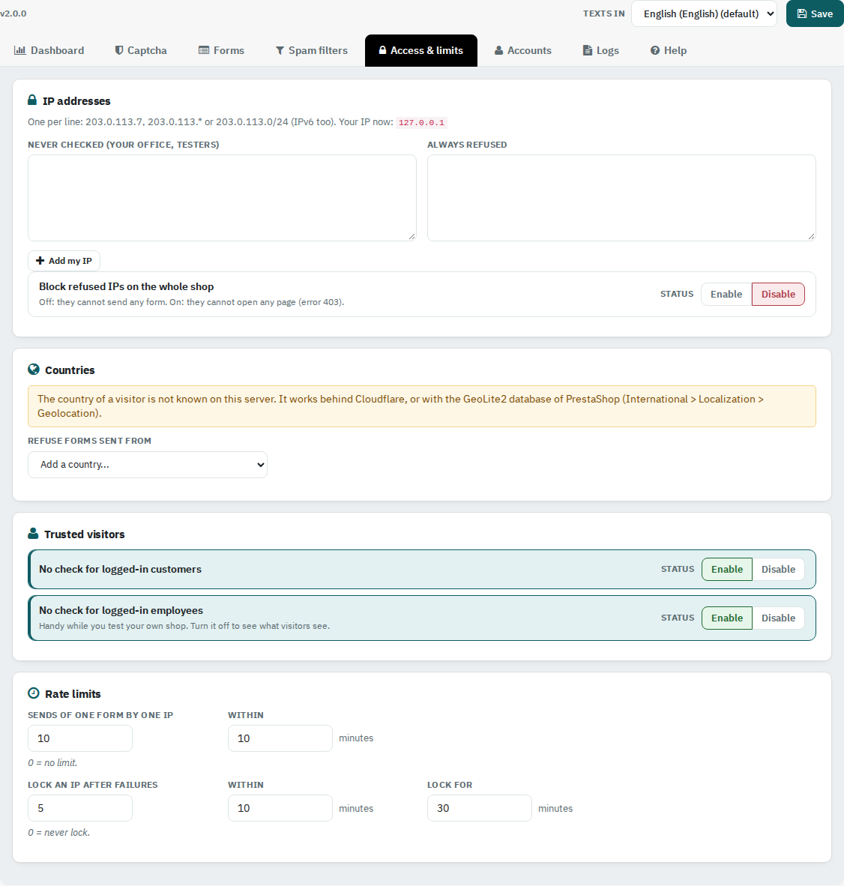

Allow or refuse IP addresses and countries, trust logged-in customers and employees, and limit how often one address can send.

One per line: 203.0.113.7, 203.0.113.* or 203.0.113.0/24 (IPv6 too). Never checked is for your office and testers; Add my IP adds the address you use now. Always refused blocks the forms, or every page when Block refused IPs on the whole shop is on.
Refuse forms sent from chosen countries. The country is known behind Cloudflare, or with the GeoLite2 database of PrestaShop (International > Localization > Geolocation).
No check for logged-in customers, and no check for logged-in employees (turn it off to see what visitors see while you test).
Sends of one form by one IP within a number of minutes (0 = no limit). Lock an IP after failures: after that many refused sends within the minutes set, the address is locked for the time set. Locked addresses are listed on the Dashboard with an Unlock button.